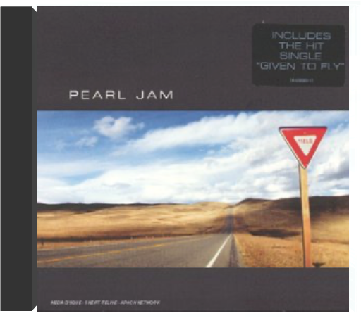

Otis Redding, roi incontesté de la soul en Amérique, s'attaque en 1967 à l'Europe. Ce live, le seul sorti de son vivant, a été enregistré lors de la mémorable tournée Stax effectuée en Angleterre et en France. Otis, accompagné de Booker T & The MG's, nous sert un Best Of sublimé par la présence du public avec tout autant d'énergie qu'à Monterey. Ce live permet de retrouver un peu du charisme immense d'un artiste capable de s'approprier, sur la terre des Beatles et des Rolling Stones, "Satisfaction" ou "Day Tripper". Encore aujourd'hui, Peter Gabriel estime que ces shows ont été les plus grands concerts auxquels il ait assisté. —François Bacherig  Le groupe Paris Combo a eu l'idée d'associer au nom de notre (belle) capitale, le mot qui désignait les petits orchestres de jazz américains. Ça tombe bien, ils sont quatre dont une fille et, avec Paris Combo, quand le jazz est là, la java ne s'en va pas forcément. Le ton est donné avec ce premier album porté par des rythmes swing et mambo, l'ensemble musical s'inscrivant dans la lignée de Django Reinhardt. Mais Paris Combo repose aussi sur un subtil métissage de notes orientales dans "Istanbul", plus latinos dans "Moi, mon âme et ma conscience" ou encore slaves dans "Berry Bouy". Avec sa gouaille de parigote, la chanteuse Belle du Berry, telle une Arletty moderne, fredonne des mélodies aux accents des faubourgs. Clin d'oeil : elle reprend "Ainsi soit-il" et "Si j'avais été", deux titres du répertoire de Jean Tranchant, un contemporain de Jean Sablon. C'est souvent dans les vieux pots... Une tendance à la croisée des genres. Intemporel et aérien. —Valérie Dupouy  Les nostalgiques de la chanson française de qualité seront aux anges. Paris Combo, formation typiquement parisienne comme son nom l'indique, emmenée par Belle du Berry, puise ses influences dans le jazz, de la ballade à la trompette bouchée au style manouche cher au cœur de Django Reinhardt. Quelques lignes de basse funky saupoudrées d'accords latino et le ton est donné d'entrée sur l'épatant "Mais que fait la NASA ?". La vision exotique de Paris Combo a tout pour séduire au-delà de nos frontières les amateurs de chansons sémillantes. C'est, semble-t-il, essentiellement mue par le plaisir de jouer et de chanter que ce groupe s'enracine avec un brio subtil dans une certaine tradition de la chanson populaire. Les thèmes contemporains sont également abordés (la pollution sur "Lettre AP") même si c'est principalement l'élégance de la gouaille que l'on retiendra de l'ensemble plutôt qu'un quelconque engagement. David Lewis, ancien pianiste d'Arthur H, accomplit de petites prouesses. Pétillant. —Hervé Comte |  'Pat Thomas Introduces Marijata' is a seminal Ghanian album that fuses highlife, reggae, folk, funk and soul, from legendary vocalist Pat Thomas. Originally released in 1976 on Gapophone Records. 'Marijata' was a group made up of three members - Kofi 'Electric' Addison on drums, Bob Fischlan on organ and Nat Osmanu on guitar, hailing from Ghana. Pat Thomas career began in 1969 with the 'Broadway Dance Band', leaving a year later to join the 'Uhuru Dance Band'. He then played with Ebo Taylor's 'Blue Monks' and finally formed the 'Sweet Beans' in 1973 where he really made his name. The group released 'False Lover' in 1974, split and then reformed as Marijata, releasing 'Marijata' (also available on Mr Bongo) and this album, 'Pat Thomas Introduces Marijata'.  A coups de déclarations, Pearl Jam et Nirvana s'étaient mené la guerre en musique au début des années 90. Les frères ennemis du grunge partageaient pourtant leur goût pour la révolte, les guitares bruitistes, les performances scéniques extrêmes... Premier album de Pearl Jam, Ten est une grosse bouffée de fraîche brutalité. Eddie Vedder alterne les coups de gueule et les élans d'optimiste, sa voix puissante et éraillée surfant sur les inflexions de la guitare agile de Stone Gossard. Les compères jettent d'ailleurs ici les bases de leur son, avant de s'orienter, la folie du grunge achevée, vers un rock plus carré et plus classique. En attendant, ils signent deux premiers hits magistraux : "Jeremy", portrait d'un adolescent torturé, devenu l'hymne des gamins mal dans leur peau, et "Alive", son riff de guitare joué en boucle et son refrain sur lequel Vedder célèbre le fait de pouvoir survivre à tout, qui sont devenus des standards, indispensables à toute bonne discothèque rock. —Isabelle Chelley  Il ne faudra bien sûr pas un instant penser que le sympathique camélidé qui orne la jaquette donne le ton de ce deuxième album des rois du grunge de Seattle. A ce compte-là, un rhinocéros contrarié eût mieux convenu à la charge frontale que mènent Eddie Vedder et son gang au long de ces trois quarts d'heure de rage et d'électricité. Vedder se montre d'ailleurs remonté comme une horloge et ferait pâlir d'envie les grands hurleurs des groupes heavy metal des 70's (ceux qui ont inspiré le son de Pearl Jam, les Led Zeppelin et autres Black Sabbath). Stone Gossard s'avère un disciple zélé de Tommy Iommi et de Jimmy Page ("Do" ou "Glorified G" contiennent des solos de guitare étourdissants). Pourtant la fureur qui domine, ce tir de barrage rythmique qui cloue au sol, n'empêchent pas les moments de répit ("Daughter") où le groupe rentre les griffes. Après un premier album qui aurait pu faire craindre que Pearl Jam avait tout dit, Vs démontre qu'il commence juste à déchiffrer et à inventer. Des trouvailles vocales ("WMA") des perles mélodiques ("Rearviewmirror", et son faux air à la R.E.M., de même que le très léché ("Elderly Woman Behind The Counter In A Small Town") et une maîtrise générale d'un style que l'on aurait pu craindre épuisé - le grunge - font de ce CD une réussite réjouissante. —José Ruiz  Avec Versus, Pearl Jam n'avait pas totalement réussi à transformer l'essai. Ce deuxième opus n'avait rien de mauvais, mais il n'était tout simplement pas à la hauteur de Ten. Mais voilà, depuis, Vitalogy est sorti. Et, soyons clair, la première écoute fait l'effet d'un uppercut dans la mâchoire ! Pearl Jam s'inscrit dans la lignée de ces groupes qui n'acceptent pas de stagner ni de se répéter. Là où on aurait pu attendre des chansons rock évoluées ou des ballades grunge, Pearl Jam préfère nous balancer un album violent, dur, et noir. Évidemment, tous les morceaux ne sont pas dans la lignée de "Spin The Black Circle", brûlot punk-rock évolué, à base de guitares incisives et de batteries destructrices. On y trouve aussi deux pures merveilles de mélancolie : "Nothing Man" et "Better Man", l'une quasiment opposée à l'autre, et pourtant musicalement si proches. À noter également un "Tremor Christ" de toute beauté, basé sur une guitare répétitive, la basse prenant l'espace laissé libre pour créer sa propre mélodie, nous emmenant ainsi dans un voyage musical éloigné des vulgaires réalités de la vie. —Romaric Bullier  Quand on pense Pearl Jam, on pense d'abord grunge et scène de Seattle. En se penchant un peu plus sur le cas, on se rend compte de l'originalité du groupe. Quatrième album en date, No Code ne déroge pas à la règle. Pour ceux qui ne connaissaient que Ten, le choc va être rude. Car depuis ce premier album, les cinq de Seattle ont fait du chemin. Ils se sont posés musicalement. Composé et enregistré à la même époque que Mirror Ball de Neil Young, avec les musiciens de Pearl Jam, l'influence est indéniable. Mais ils ont su s'approprier le son du maître et en faire quelquechose de très personnel. Parmi toutes les chansons qui composent No Code, on trouve quelques-unes des plus belles mélodies de Pearl Jam. "In My Tree", tout d'abord, un morceau extrêmement poétique qui démontre encore une fois que le répertoire de Pearl Jam dépasse les limites du rock. Mais surtout, on peut trouver ici "Off He Goes", petite merveilles pop-folk, quelques accords de guitares d'une simplicité et d'une beauté désarmantes. Ne serait-ce que pour ce titre, il faut posséder No Code. —Romaric Bullier  yieldpearl jam Est-il difficile d'être un des groupes phares de la scène grunge originelle après la mort de Kurt Cobain ? Cette question, Eddie Vedder semble avoir cessé de se la poser. Après une courte période de flottement, il nous offre un des meilleurs albums de Pearl Jam, si ce n'est le meilleur. Car si Yield n'est pas un chef-d'œuvre du rock américain, il en a quand même sacrément l'air. |

Julien
Collection Total:
2 053 Items
2 053 Items
Last Updated:
May 23, 2024
May 23, 2024


 Made with Delicious Library
Made with Delicious Library